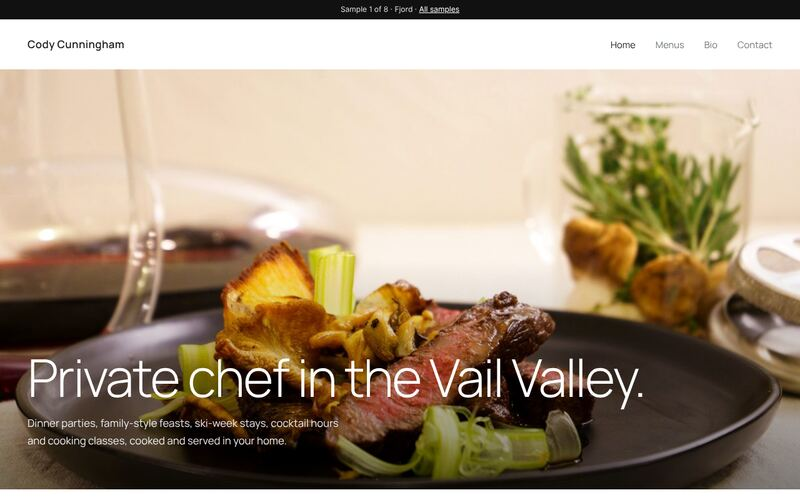

chefcodycunningham.com · Round two
Eight directions, all photo-first
Each sample is a working three-page site: Home, Menus, and either a Bio page or a Contact page. The copy and menus are the same in all eight, taken from your 2026–27 winter menus and past proposals, with no prices. Open them on your phone too.
Two structuresSamples 1, 3, 5 and 7 have a Bio page, with a small contact form at the foot of every page. Samples 2, 4, 6 and 8 put your bio on the home page and add a Contact page.
PhotosThese use the photos from your current site and your menu PDFs. Your "Photos a la food" favorites will replace them.
Mix and matchAny look works with either structure, and any menu layout (list, tabs, photo rows or fold-open) can go with any look.